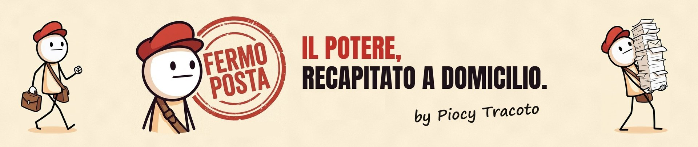

Fermo Posta: il potere, recapitato a domicilio

 4 novembre 2026 · 5 min di lettura
Come una guerra è arrivata al tuo distributore: 27 euro a pieno
Il 26 febbraio il gasolio costava 1,72 euro al litro, il 28 ottobre 2,26: su un pieno da cinquanta litri, ventisette euro in più. Questa è la storia di quei ventisette euro, dalla guerra tra Stati Uniti, Israele e Iran allo Stretto di Hormuz, dalle proroghe delle accise all'IVA che paga lo sconto, fino al raid su Qeshm e al voto americano.
4 novembre 2026 · 5 min di lettura
Come una guerra è arrivata al tuo distributore: 27 euro a pieno
Il 26 febbraio il gasolio costava 1,72 euro al litro, il 28 ottobre 2,26: su un pieno da cinquanta litri, ventisette euro in più. Questa è la storia di quei ventisette euro, dalla guerra tra Stati Uniti, Israele e Iran allo Stretto di Hormuz, dalle proroghe delle accise all'IVA che paga lo sconto, fino al raid su Qeshm e al voto americano.
 2 novembre 2026 · 1 min di lettura
Iran e Trump: colloqui di pace senza il nemico
Iran e Stati Uniti, colloqui di pace in Qatar senza incontrarsi. Araghchi spera nella "razionalità", Trump non ha fretta e, sulle bombe dopo il voto di metà mandato, risponde "possibile". Intanto lo Stretto di Hormuz resta il problema, e al distributore paghi tu.
2 novembre 2026 · 1 min di lettura
Iran e Trump: colloqui di pace senza il nemico
Iran e Stati Uniti, colloqui di pace in Qatar senza incontrarsi. Araghchi spera nella "razionalità", Trump non ha fretta e, sulle bombe dopo il voto di metà mandato, risponde "possibile". Intanto lo Stretto di Hormuz resta il problema, e al distributore paghi tu.
Ogni dato dei video viene da qui: fonti originali. ZeroHedge lo trovi in fondo a ogni episodio come spunto: è da dove partiamo, non da dove vengono i dati.
Come una guerra è arrivata al tuo distributore: 27 euro a pieno
4 novembre 2026
- Agenzia internazionale dell'energia, rapporto di ottobre 2026
- Istat, prezzi al consumo di ottobre 2026
- Decreto-legge 33/2026 sulle accise
- Prezzi dei carburanti, dati Mimit (ANSA)
- Discorso di Trump del 28/2 (Miller Center)
- Qeshm e Rezaei (Al Jazeera)
- Voto Usa del 3/11 (NPR)
Spunto, non fonte: ZeroHedge
Chi siamo
Fermo Posta è un canale di satira politica a fumetti di Piocy Tracoto. Si parte da un fatto vero, si risale alle fonti originali e si racconta da chi paga il conto. Si colpisce chi ha potere, di ogni colore.
Disegni con Nano Banana Pro (Google Flow), copione e montaggio con Claude Opus 5.5, voce di Piocy Tracoto clonata con ElevenLabs.
Scrivi alla redazione
Segnalazioni di errori, spunti, collaborazioni, proposte di lavoro e stampa.
Gli errori segnalati e confermati vengono corretti nella descrizione del video e qui.